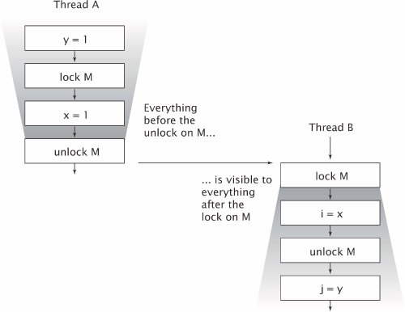

{% include JB/setup %}
{% raw %}
<div>


<a href="21021536.html" class="calibre2"></a><a name="ch03lev1sec1" class="calibre18" id="ch03lev1sec1"></a>
<h3 id="title-IDARE40W" class="docSection1Title">3.1. Visibility</h3>
<p class="docText1">Visibility is subtle because the things that can go wrong are so counterintuitive. In a single-threaded environment, if you write a value to a variable and later read that variable with no intervening writes, you can expect to get the same value back. This seems only natural. It may be hard to accept at first, but when the reads and writes occur in different threads, <span class="docEmphasis">this is simply not the case</span>. In general, there is <span class="docEmphasis">no</span> guarantee that the reading thread will see a value written by another thread on a timely basis, or even at all. In order to ensure visibility of memory writes across threads, you must use synchronization.</p>
<p class="docText1"><tt class="calibre25">NoVisibility</tt> in <a class="calibre2" href="#ch03list01">Listing 3.1</a> illustrates what can go wrong when threads share data without synchronization. Two threads, the main thread and the reader thread, access the shared variables <tt class="calibre25">ready</tt> and <tt class="calibre25">number</tt>. The main thread starts the reader thread and then sets <tt class="calibre25">number</tt> to 42 and <tt class="calibre25">ready</tt> to <tt class="calibre25">true</tt>. The reader <a name="iddle1141" class="calibre18" id="iddle1141"></a><a name="iddle1428" class="calibre18" id="iddle1428"></a><a name="iddle1429" class="calibre18" id="iddle1429"></a><a name="iddle1430" class="calibre18" id="iddle1430"></a><a name="iddle1939" class="calibre18" id="iddle1939"></a><a name="iddle2146" class="calibre18" id="iddle2146"></a><a name="iddle2618" class="calibre18" id="iddle2618"></a><a name="iddle2619" class="calibre18" id="iddle2619"></a><a name="iddle3398" class="calibre18" id="iddle3398"></a><a name="iddle3399" class="calibre18" id="iddle3399"></a><a name="iddle3496" class="calibre18" id="iddle3496"></a><a name="iddle3529" class="calibre18" id="iddle3529"></a><a name="iddle3530" class="calibre18" id="iddle3530"></a><a name="iddle3847" class="calibre18" id="iddle3847"></a><a name="iddle3848" class="calibre18" id="iddle3848"></a><a name="iddle3849" class="calibre18" id="iddle3849"></a><a name="iddle3850" class="calibre18" id="iddle3850"></a><a name="iddle3851" class="calibre18" id="iddle3851"></a><a name="iddle3852" class="calibre18" id="iddle3852"></a><a name="iddle4286" class="calibre18" id="iddle4286"></a><a name="iddle4287" class="calibre18" id="iddle4287"></a><a name="iddle4456" class="calibre18" id="iddle4456"></a>thread spins until it sees <tt class="calibre25">ready</tt> is <tt class="calibre25">true</tt>, and then prints out <tt class="calibre25">number</tt>. While it may seem obvious that <tt class="calibre25">NoVisibility</tt> will print 42, it is in fact possible that it will print zero, or never terminate at all! Because it does not use adequate synchronization, there is no guarantee that the values of <tt class="calibre25">ready</tt> and <tt class="calibre25">number</tt> written by the main thread will be visible to the reader thread.</p>
<a name="ch03list01" class="calibre18" id="ch03list01"></a><h5 id="title-IDA0P40W" class="docExampleTitle">Listing 3.1. Sharing Variables without Synchronization. <span class="docEmphasis">Don't Do this</span>.</h5><p class="calibre21"><table cellspacing="0" width="90%" border="1" cellpadding="5" class="calibre5"><tr class="calibre6"><td class="calibre28">

<pre class="calibre30">public class NoVisibility {
    private static boolean ready;
    private static int number;

    private static class ReaderThread extends Thread {
        public void run() {
            while (!ready)
                Thread.yield();
            System.out.println(number);
        }
    }

    public static void main(String[] args) {
        new ReaderThread().start();
        number = 42;
        ready = true;
    }
}
</pre><br class="calibre11"/>
</td></tr></table></p>
<p class="docText1"><tt class="calibre25">NoVisibility</tt> could loop forever because the value of <tt class="calibre25">ready</tt> might never become visible to the reader thread. Even more strangely, <tt class="calibre25">NoVisibility</tt> could print zero because the write to <tt class="calibre25">ready</tt> might be made visible to the reader thread <span class="docEmphasis">before</span> the write to <tt class="calibre25">number</tt>, a phenomenon known as <span class="docEmphasis">reordering</span>. There is no guarantee that operations in one thread will be performed in the order given by the program, as long as the reordering is not detectable from within <span class="docEmphasis">that</span> thread<span class="docEmphasis">even if the reordering is apparent to other threads</span>.<sup class="docFootnote"><a class="calibre2" href="#ch03fn01">[1]</a></sup> When the main thread writes first to <tt class="calibre25">number</tt> and then to <tt class="calibre25">done</tt> without synchronization, the reader thread could see those writes happen in the opposite orderor not at all.</p><blockquote class="calibre19"><p class="docFootnote1"><sup class="calibre27"><a name="ch03fn01" class="calibre18" id="ch03fn01">[1]</a></sup> This may seem like a broken design, but it is meant to allow JVMs to take full advantage of the performance of modern multiprocessor hardware. For example, in the absence of synchronization, the Java Memory Model permits the compiler to reorder operations and cache values in registers, and permits CPUs to reorder operations and cache values in processor-specific caches. For more details, see <a class="calibre2" href="ch16.html#ch16">Chapter 16</a>.</p></blockquote>
<a name="ch03sb01" class="calibre18" id="ch03sb01"></a><p class="calibre21"><table cellspacing="0" width="90%" border="1" cellpadding="5" class="calibre5"><tr class="calibre6"><td class="calibre28">
<p class="docText1"><a name="iddle1686" class="calibre18" id="iddle1686"></a><a name="iddle1761" class="calibre18" id="iddle1761"></a><a name="iddle2227" class="calibre18" id="iddle2227"></a><a name="iddle2228" class="calibre18" id="iddle2228"></a><a name="iddle2305" class="calibre18" id="iddle2305"></a><a name="iddle2306" class="calibre18" id="iddle2306"></a><a name="iddle2558" class="calibre18" id="iddle2558"></a><a name="iddle2559" class="calibre18" id="iddle2559"></a><a name="iddle3409" class="calibre18" id="iddle3409"></a><a name="iddle3410" class="calibre18" id="iddle3410"></a><a name="iddle4364" class="calibre18" id="iddle4364"></a><a name="iddle4561" class="calibre18" id="iddle4561"></a><a name="iddle4730" class="calibre18" id="iddle4730"></a>In the absence of synchronization, the compiler, processor, and runtime can do some downright weird things to the order in which operations appear to execute. Attempts to reason about the order in which memory actions "must" happen in insufflciently synchronized multithreaded programs will almost certainly be incorrect.</p>
</td></tr></table></p><p class="calibre1"> </p>
<p class="docText1"><tt class="calibre25">NoVisibility</tt> is about as simple as a concurrent program can gettwo threads and two shared variablesand yet it is still all too easy to come to the wrong conclusions about what it does or even whether it will terminate. Reasoning about insufficiently synchronized concurrent programs is prohibitively difficult.</p>
<p class="docText1">This may all sound a little scary, and it should. Fortunately, there's an easy way to avoid these complex issues: <span class="docEmphasis">always use the proper synchronization whenever data is shared across threads.</span></p>
<a name="ch03lev2sec1" class="calibre18" id="ch03lev2sec1"></a>
<h4 id="title-IDA1W40W" class="docSection2Title">3.1.1. Stale Data</h4>
<p class="docText1"><tt class="calibre25">NoVisibility</tt> demonstrated one of the ways that insufficiently synchronized programs can cause surprising results: <span class="docEmphasis">stale data</span>. When the reader thread examines <tt class="calibre25">ready</tt>, it may see an out-of-date value. Unless synchronization is used <span class="docEmphasis">every time a variable is accessed</span>, it is possible to see a stale value for that variable. Worse, staleness is not all-or-nothing: a thread can see an up-to-date value of one variable but a stale value of another variable that was written first.</p>
<p class="docText1">When food is stale, it is usually still ediblejust less enjoyable. But stale data can be more dangerous. While an out-of-date hit counter in a web application might not be so bad,<sup class="docFootnote"><a class="calibre2" href="#ch03fn02">[2]</a></sup> stale values can cause serious safety or liveness failures. In <tt class="calibre25">NoVisibility</tt>, stale values could cause it to print the wrong value or prevent the program from terminating. Things can get even more complicated with stale values of object references, such as the link pointers in a linked list implementation. <span class="docEmphasis">Stale data can cause serious and confusing failures such as unexpected exceptions, corrupted data structures, inaccurate computations, and infinite loops.</span></p><blockquote class="calibre19"><p class="docFootnote1"><sup class="calibre27"><a name="ch03fn02" class="calibre18" id="ch03fn02">[2]</a></sup> Reading data without synchronization is analogous to using the <tt class="calibre35">READ_UNCOMMITTED</tt> isolation level in a database, where you are willing to trade accuracy for performance. However, in the case of unsynchronized reads, you are trading away a greater degree of accuracy, since the visible value for a shared variable can be arbitrarily stale.</p></blockquote>
<p class="docText1"><tt class="calibre25">MutableInteger</tt> in <a class="calibre2" href="#ch03list02">Listing 3.2</a> is not thread-safe because the <tt class="calibre25">value</tt> field is accessed from both <tt class="calibre25">get</tt> and <tt class="calibre25">set</tt> without synchronization. Among other hazards, it is susceptible to stale values: if one thread calls <tt class="calibre25">set</tt>, other threads calling <tt class="calibre25">get</tt> may or may not see that update.</p>
<p class="docText1">We can make <tt class="calibre25">MutableInteger</tt> tHRead safe by synchronizing the getter and setter as shown in <tt class="calibre25">SynchronizedInteger</tt> in <a class="calibre2" href="#ch03list03">Listing 3.3</a>. Synchronizing only the setter would not be sufficient: threads calling <tt class="calibre25">get</tt> would still be able to see stale values.</p>
<p class="docText1"></p><a name="ch03list02" class="calibre18" id="ch03list02"></a><h5 id="title-IDAGZ40W" class="docExampleTitle">Listing 3.2. Non-thread-safe Mutable Integer Holder.</h5><p class="calibre21"><table cellspacing="0" width="90%" border="1" cellpadding="5" class="calibre5"><tr class="calibre6"><td class="calibre28">

<pre class="calibre30">@NotThreadSafe
public class MutableInteger {
    private int value;

    public int  get() { return value; }
    public void set(int value) { this.value = value; }
}
</pre><br class="calibre11"/>
</td></tr></table></p>
<a name="ch03list03" class="calibre18" id="ch03list03"></a><h5 id="title-IDAB040W" class="docExampleTitle">Listing 3.3. Thread-safe Mutable Integer Holder.</h5><p class="calibre21"><table cellspacing="0" width="90%" border="1" cellpadding="5" class="calibre5"><tr class="calibre6"><td class="calibre28">
<pre class="calibre30">@ThreadSafe
public class SynchronizedInteger {
    <span class="docEmphStrong">@GuardedBy("this")</span> private int value;

    public <span class="docEmphStrong">synchronized</span> int get() { return value; }
    public <span class="docEmphStrong">synchronized</span> void set(int value) { this.value = value; }
}
</pre><br class="calibre11"/>
</td></tr></table></p>
<a name="ch03lev2sec2" class="calibre18" id="ch03lev2sec2"></a>
<h4 id="title-IDA3040W" class="docSection2Title">3.1.2. Nonatomic 64-bit Operations</h4>
<p class="docText1"><a name="iddle1001" class="calibre18" id="iddle1001"></a><a name="iddle1002" class="calibre18" id="iddle1002"></a><a name="iddle1147" class="calibre18" id="iddle1147"></a><a name="iddle1148" class="calibre18" id="iddle1148"></a><a name="iddle1751" class="calibre18" id="iddle1751"></a><a name="iddle1752" class="calibre18" id="iddle1752"></a><a name="iddle2140" class="calibre18" id="iddle2140"></a><a name="iddle2192" class="calibre18" id="iddle2192"></a><a name="iddle2839" class="calibre18" id="iddle2839"></a><a name="iddle3161" class="calibre18" id="iddle3161"></a><a name="iddle3300" class="calibre18" id="iddle3300"></a><a name="iddle3374" class="calibre18" id="iddle3374"></a><a name="iddle3375" class="calibre18" id="iddle3375"></a><a name="iddle5104" class="calibre18" id="iddle5104"></a>When a thread reads a variable without synchronization, it may see a stale value, but at least it sees a value that was actually placed there by some thread rather than some random value. This safety guarantee is called <span class="docEmphasis">out-of-thin-air safety</span>.</p>
<p class="docText1">Out-of-thin-air safety applies to all variables, with one exception: 64-bit numeric variables (<tt class="calibre25">double</tt> and <tt class="calibre25">long</tt>) that are not declared <tt class="calibre25">volatile</tt> (see <a class="calibre2" href="#ch03lev2sec4">Section 3.1.4</a>). The Java Memory Model requires fetch and store operations to be atomic, but for nonvolatile <tt class="calibre25">long</tt> and <tt class="calibre25">double</tt> variables, the JVM is permitted to treat a 64-bit read or write as two separate 32-bit operations. If the reads and writes occur in different threads, it is therefore possible to read a nonvolatile <tt class="calibre25">long</tt> and get back the high 32 bits of one value and the low 32 bits of another.<sup class="docFootnote"><a class="calibre2" href="#ch03fn03">[3]</a></sup> Thus, even if you don't care about stale values, it is not safe to use shared mutable <tt class="calibre25">long</tt> and <tt class="calibre25">double</tt> variables in multithreaded programs unless they are declared <tt class="calibre25">volatile</tt> or guarded by a lock.</p><blockquote class="calibre19"><p class="docFootnote1"><sup class="calibre27"><a name="ch03fn03" class="calibre18" id="ch03fn03">[3]</a></sup> When the Java Virtual Machine Specification was written, many widely used processor architectures could not efficiently provide atomic 64-bit arithmetic operations.</p></blockquote>
<a name="ch03lev2sec3" class="calibre18" id="ch03lev2sec3"></a>
<h4 id="title-IDA1A50W" class="docSection2Title">3.1.3. Locking and Visibility</h4>
<p class="docText1">Intrinsic locking can be used to guarantee that one thread sees the effects of another in a predictable manner, as illustrated by <a class="calibre2" href="#ch03fig01">Figure 3.1</a>. When thread <span class="docEmphasis">A</span> executes a <tt class="calibre25">synchronized</tt> block, and subsequently thread <span class="docEmphasis">B</span> enters a <tt class="calibre25">synchronized</tt> block guarded by the same lock, the values of variables that were visible to <span class="docEmphasis">A</span> prior to releasing the lock are guaranteed to be visible to <span class="docEmphasis">B</span> upon acquiring the<a name="iddle5064" class="calibre18" id="iddle5064"></a><a name="iddle5122" class="calibre18" id="iddle5122"></a>lock. In other words, everything <span class="docEmphasis">A</span> did in or prior to a <tt class="calibre25">synchronized</tt> block is visible to <span class="docEmphasis">B</span> when it executes a <tt class="calibre25">synchronized</tt> block guarded by the same lock. <span class="docEmphasis">Without synchronization, there is no such guarantee.</span></p>
<a name="ch03fig01" class="calibre18" id="ch03fig01"></a><p class="calibre21"><div class="calibre12">
<h5 class="docExampleTitle">Figure 3.1. Visibility Guarantees for Synchronization.</h5>
</div></p><p class="docText1">
</p>
<p class="calibre1"> </p>
<p class="docText1">We can now give the other reason for the rule requiring all threads to synchronize on the <span class="docEmphasis">same</span> lock when accessing a shared mutable variableto guarantee that values written by one thread are made visible to other threads. Otherwise, if a thread reads a variable without holding the appropriate lock, it might see a stale value.</p>
<a name="ch03sb02" class="calibre18" id="ch03sb02"></a><p class="calibre21"><table cellspacing="0" width="90%" border="1" cellpadding="5" class="calibre5"><tr class="calibre6"><td class="calibre28">
<p class="docText1">Locking is not just about mutual exclusion; it is also about memory visibility. To ensure that all threads see the most up-to-date values of shared mutable variables, the reading and writing threads must synchronize on a common lock.</p>
</td></tr></table></p><p class="calibre1"> </p>
<a name="ch03lev2sec4" class="calibre18" id="ch03lev2sec4"></a>
<h4 id="title-IDA5D50W" class="docSection2Title">3.1.4. Volatile Variables</h4>
<p class="docText1">The Java language also provides an alternative, weaker form of synchronization, <span class="docEmphasis">volatile variables</span>, to ensure that updates to a variable are propagated predictably <a name="iddle1832" class="calibre18" id="iddle1832"></a><a name="iddle2398" class="calibre18" id="iddle2398"></a><a name="iddle2610" class="calibre18" id="iddle2610"></a><a name="iddle2640" class="calibre18" id="iddle2640"></a><a name="iddle2641" class="calibre18" id="iddle2641"></a><a name="iddle2642" class="calibre18" id="iddle2642"></a><a name="iddle2919" class="calibre18" id="iddle2919"></a><a name="iddle3383" class="calibre18" id="iddle3383"></a><a name="iddle3384" class="calibre18" id="iddle3384"></a><a name="iddle3857" class="calibre18" id="iddle3857"></a><a name="iddle4245" class="calibre18" id="iddle4245"></a><a name="iddle4445" class="calibre18" id="iddle4445"></a><a name="iddle4446" class="calibre18" id="iddle4446"></a><a name="iddle4447" class="calibre18" id="iddle4447"></a><a name="iddle4580" class="calibre18" id="iddle4580"></a><a name="iddle5050" class="calibre18" id="iddle5050"></a><a name="iddle5051" class="calibre18" id="iddle5051"></a><a name="iddle5063" class="calibre18" id="iddle5063"></a><a name="iddle5121" class="calibre18" id="iddle5121"></a>to other threads. When a field is declared <tt class="calibre25">volatile</tt>, the compiler and runtime are put on notice that this variable is shared and that operations on it should not be reordered with other memory operations. Volatile variables are not cached in registers or in caches where they are hidden from other processors, so a read of a volatile variable always returns the most recent write by any thread.</p>
<p class="docText1">A good way to think about volatile variables is to imagine that they behave roughly like the <tt class="calibre25">SynchronizedInteger</tt> class in <a class="calibre2" href="#ch03list03">Listing 3.3</a>, replacing reads and writes of the volatile variable with calls to <tt class="calibre25">get</tt> and <tt class="calibre25">set</tt>.<sup class="docFootnote"><a class="calibre2" href="#ch03fn04">[4]</a></sup> Yet accessing a volatile variable performs no locking and so cannot cause the executing thread to block, making volatile variables a lighter-weight synchronization mechanism than <tt class="calibre25">synchronized</tt>.<sup class="docFootnote"><a class="calibre2" href="#ch03fn05">[5]</a></sup></p><blockquote class="calibre19"><p class="docFootnote1"><sup class="calibre27"><a name="ch03fn04" class="calibre18" id="ch03fn04">[4]</a></sup> This analogy is not exact; the memory visibility effects of <tt class="calibre35">SynchronizedInteger</tt> are actually slightly stronger than those of volatile variables. See <a class="calibre2" href="ch16.html#ch16">Chapter 16</a>.</p></blockquote><blockquote class="calibre19"><p class="docFootnote1"><sup class="calibre27"><a name="ch03fn05" class="calibre18" id="ch03fn05">[5]</a></sup> Volatile reads are only slightly more expensive than nonvolatile reads on most current processor architectures.</p></blockquote>
<p class="docText1">The visibility effects of volatile variables extend beyond the value of the volatile variable itself. When thread <span class="docEmphasis">A</span> writes to a volatile variable and subsequently thread <span class="docEmphasis">B</span> reads that same variable, the values of <span class="docEmphasis">all</span> variables that were visible to <span class="docEmphasis">A</span> prior to writing to the volatile variable become visible to <span class="docEmphasis">B</span> after reading the volatile variable. So from a memory visibility perspective, writing a volatile variable is like exiting a <tt class="calibre25">synchronized</tt> block and reading a volatile variable is like entering a <tt class="calibre25">synchronized</tt> block. However, we do not recommend relying too heavily on volatile variables for visibility; code that relies on volatile variables for visibility of arbitrary state is more fragile and harder to understand than code that uses locking.</p>
<a name="ch03sb03" class="calibre18" id="ch03sb03"></a><p class="calibre21"><table cellspacing="0" width="90%" border="1" cellpadding="5" class="calibre5"><tr class="calibre6"><td class="calibre28">
<p class="docText1">Use <tt class="calibre25">volatile</tt> variables only when they simplify implementing and verifying your synchronization policy; avoid using <tt class="calibre25">volatile</tt> variables when veryfing correctness would require subtle reasoning about visibility. Good uses of <tt class="calibre25">volatile</tt> variables include ensuring the visibility of their own state, that of the object they refer to, or indicating that an important lifecycle event (such as initialization or shutdown) has occurred.</p>
</td></tr></table></p><p class="calibre1"> </p>
<p class="docText1"><a class="calibre2" href="#ch03list04">Listing 3.4</a> illustrates a typical use of volatile variables: checking a status flag to determine when to exit a loop. In this example, our anthropomorphized thread is trying to get to sleep by the time-honored method of counting sheep. For this example to work, the <tt class="calibre25">asleep</tt> flag must be volatile. Otherwise, the thread might not notice when <tt class="calibre25">asleep</tt> has been set by another thread.<sup class="docFootnote"><a class="calibre2" href="#ch03fn06">[6]</a></sup> We could instead have <a name="iddle1142" class="calibre18" id="iddle1142"></a><a name="iddle1404" class="calibre18" id="iddle1404"></a><a name="iddle2021" class="calibre18" id="iddle2021"></a><a name="iddle2046" class="calibre18" id="iddle2046"></a><a name="iddle2050" class="calibre18" id="iddle2050"></a><a name="iddle2821" class="calibre18" id="iddle2821"></a><a name="iddle2863" class="calibre18" id="iddle2863"></a><a name="iddle3162" class="calibre18" id="iddle3162"></a><a name="iddle3717" class="calibre18" id="iddle3717"></a><a name="iddle3718" class="calibre18" id="iddle3718"></a><a name="iddle3719" class="calibre18" id="iddle3719"></a><a name="iddle3720" class="calibre18" id="iddle3720"></a><a name="iddle3721" class="calibre18" id="iddle3721"></a><a name="iddle4107" class="calibre18" id="iddle4107"></a><a name="iddle4108" class="calibre18" id="iddle4108"></a><a name="iddle4133" class="calibre18" id="iddle4133"></a><a name="iddle5046" class="calibre18" id="iddle5046"></a><a name="iddle5066" class="calibre18" id="iddle5066"></a><a name="iddle5124" class="calibre18" id="iddle5124"></a>used locking to ensure visibility of changes to <tt class="calibre25">asleep</tt>, but that would have made the code more cumbersome.</p><blockquote class="calibre19"><p class="docFootnote1"><sup class="calibre27"><a name="ch03fn06" class="calibre18" id="ch03fn06">[6]</a></sup> Debugging tip: For server applications, be sure to always specify the <tt class="calibre35">-server</tt> JVM command line switch when invoking the JVM, even for development and testing. The server JVM performs more optimization than the client JVM, such as hoisting variables out of a loop that are not modified in the loop; code that might appear to work in the development environment (client JVM) can break in the deployment environment (server JVM). For example, had we "forgotten" to declare the variable <tt class="calibre35">asleep</tt> as <tt class="calibre35">volatile</tt> in <a class="calibre2" href="#ch03list04">Listing 3.4</a>, the server JVM could hoist the test out of the loop (turning it into an infinite loop), but the client JVM would not. An infinite loop that shows up in development is far less costly than one that only shows up in production.</p></blockquote>
<a name="ch03list04" class="calibre18" id="ch03list04"></a><h5 id="title-IDAOF5CX" class="docExampleTitle">Listing 3.4. Counting Sheep.</h5><p class="calibre21"><table cellspacing="0" width="90%" border="1" cellpadding="5" class="calibre5"><tr class="calibre6"><td class="calibre28">
<pre class="calibre30"><span class="docEmphStrong">volatile</span> boolean asleep;
...
    while (!asleep)
        countSomeSheep();
</pre><br class="calibre11"/>
</td></tr></table></p>
<p class="docText1">Volatile variables are convenient, but they have limitations. The most common use for volatile variables is as a completion, interruption, or status flag, such as the <tt class="calibre25">asleep</tt> flag in <a class="calibre2" href="#ch03list04">Listing 3.4</a>. Volatile variables can be used for other kinds of state information, but more care is required when attempting this. For example, the semantics of <tt class="calibre25">volatile</tt> are not strong enough to make the increment operation (<tt class="calibre25">count++</tt>) atomic, unless you can guarantee that the variable is written only from a single thread. (Atomic variables do provide atomic read-modify-write support and can often be used as "better volatile variables"; see <a class="calibre2" href="ch15.html#ch15">Chapter 15</a>.)</p>
<a name="ch03sb04" class="calibre18" id="ch03sb04"></a><p class="calibre21"><table cellspacing="0" width="90%" border="1" cellpadding="5" class="calibre5"><tr class="calibre6"><td class="calibre28">
<p class="docText1">Locking can guarantee both visibility and atomicity; volatile variables can only guarantee visibility.</p>
</td></tr></table></p><p class="calibre1"> </p>
<p class="docText1">You can use volatile variables only when all the following criteria are met:</p>
<ul class="calibre15"><li class="calibre16"><p class="docText1">Writes to the variable do not depend on its current value, or you can ensure that only a single thread ever updates the value;</p></li><li class="calibre16"><p class="docText1">The variable does not participate in invariants with other state variables; and</p></li><li class="calibre16"><p class="docText1">Locking is not required for any other reason while the variable is being accessed.</p></li></ul>
<a href="21021536.html" class="calibre2"></a>
<p class="calibre3"> </p>

</div>

{% endraw %}

